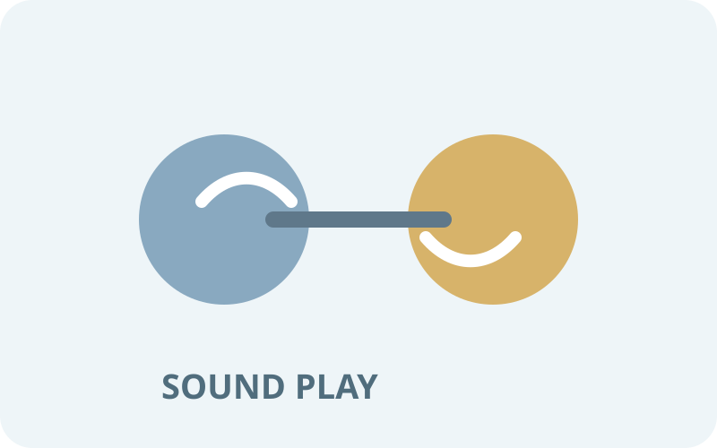
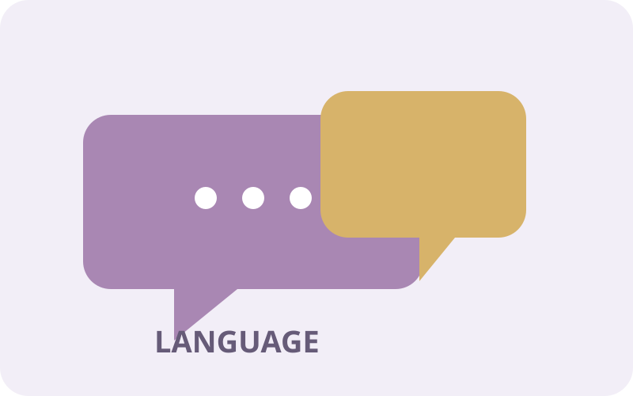
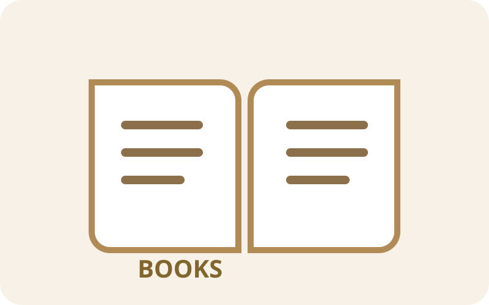
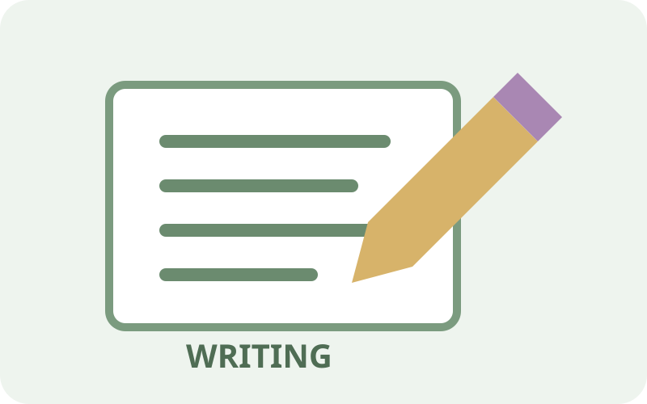
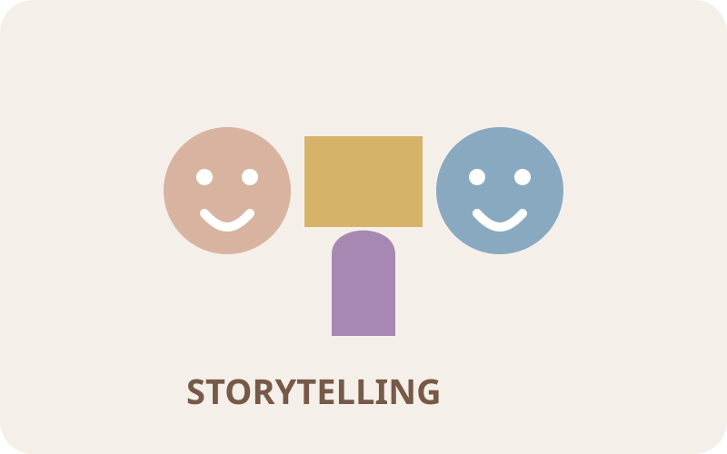

🔤 Phonological Awareness
Support listening, rhyming, syllables, sound play, and children's growing awareness of spoken language.
Explore Resources →Explore practical early childhood resources that support language development, vocabulary, phonological awareness, books and reading, writing, and storytelling.
Choose a resource collection to explore classroom ideas, observation prompts, planning connections, and printable supports.

Support listening, rhyming, syllables, sound play, and children's growing awareness of spoken language.
Explore Resources →
Strengthen conversations, vocabulary, expressive language, receptive language, and meaningful communication.
Explore Resources →
Encourage book knowledge, story comprehension, print awareness, shared reading, and joyful engagement with books.
Explore Resources →
Support drawing, scribbling, name writing, emergent writing, fine motor development, and purposeful print.
Explore Resources →
Build narrative language through dramatic play, story retelling, sequencing, puppets, props, and conversation.
Explore Resources →Use everyday routines, play, interest areas, books, conversations, music, movement, and family connections as opportunities for language and literacy learning.
Notice how children communicate, listen, interact with books, use symbols, tell stories, and experiment with writing.
Assessment Center →Turn children's interests and observations into meaningful literacy experiences.
Lesson Plan Library →Find classroom ready literacy forms and printable learning supports.
Printable Library →